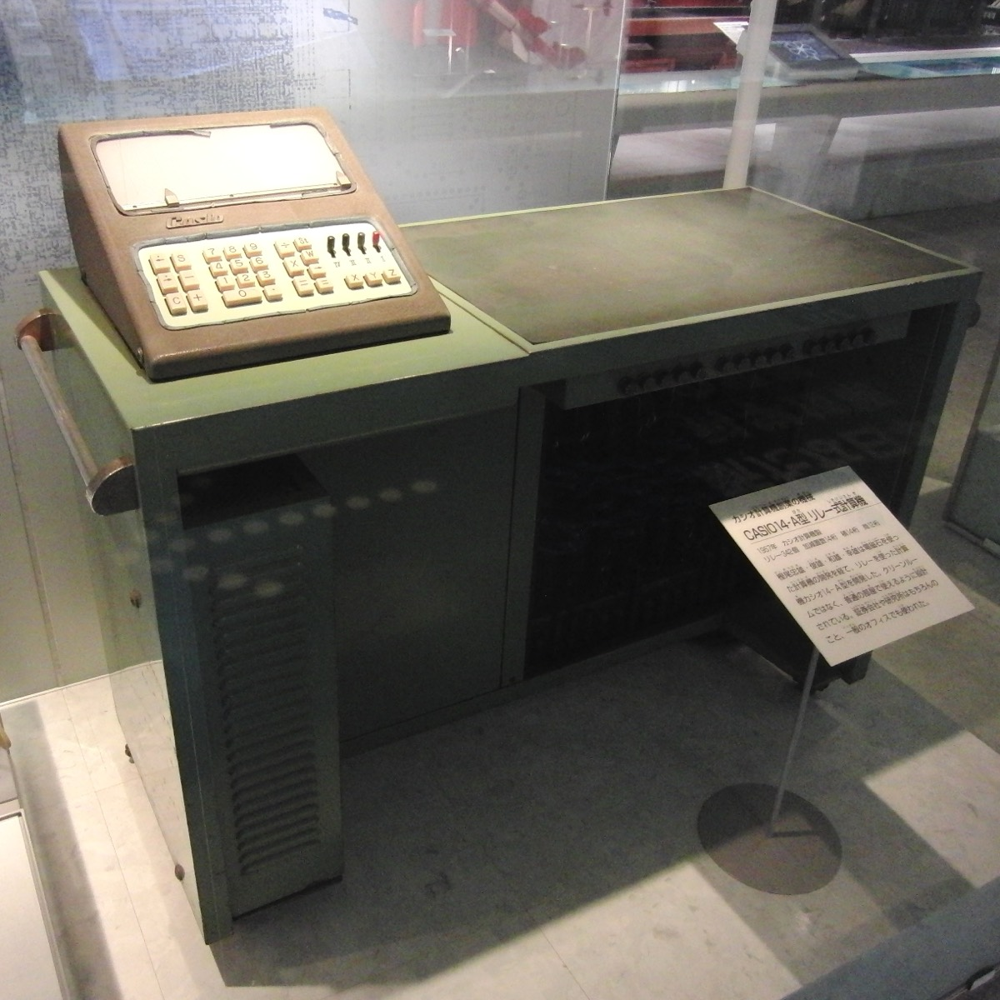
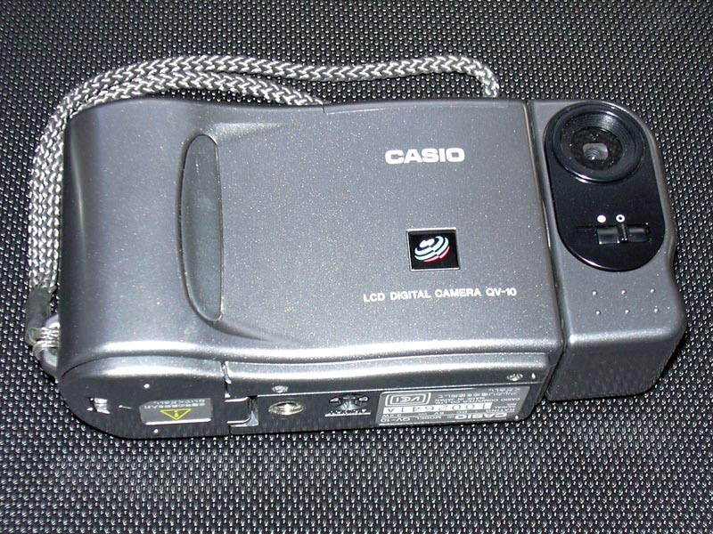

Economy · Business
Casio made itself smaller to survive
It has spent fifteen years walking away from businesses: displays, semiconductors, phones, printers and even the consumer digital cameras it invented itself. Now, for the first time since the previous plan, it says it wants to grow again.
In May this year, Casio reported the results of the financial year it had closed on 31 March. Japanese accounts work like this: Casio’s year began in April 2025 and ended in March 2026. The numbers were these: 276,300 million yen of revenue, up 5.5%; 23,100 million of operating profit, up 62.1%; and a net profit of 18,200 million, more than double the year before. The company itself had forecast sales of 270,000 million. Its own forecast fell short.
The figures in this piece are in yen. For a sense of scale: at the European Central Bank reference rate of 31 March 2026 (183.39 yen to the euro), the day Casio closed its financial year, those 276,300 million yen are about 1.5 billion euros, and the 23,100 million of operating profit about 126 million euros. The conversion holds for that day and for this paragraph only: the historical series stays in yen, and further down you will see why.
Look at what that means. An eighty-year-old Japanese company has just posted those numbers selling, basically, two things: resin watches and school calculators. Two products the mobile phone made technically unnecessary more than a decade ago.
And don’t oversell it either. Casio is a long way from where it was: in the financial year ended March 2016 it took 352,258 million yen of revenue and made 42,169 million of operating profit. Ten years on, revenue is 21.6% below that year and operating profit is still almost half of it. The company has not gone back to what it was and, more than that, has stopped trying.
The easy explanation is that Casio held on. That it took the hit and survived on Japanese stubbornness, or on the strength of an eighties brand. The data says something rather less romantic and rather more interesting: Casio did not hold on. It shrank on purpose. Since 2010 it has walked away from one business after another — display panels, semiconductor packaging, mobile phones, printers, digital cameras — until what was left was the part that actually made money. Today it is a smaller company than it was fifteen years ago, and that is exactly why it earns more.
This is the story of how that is done. And of why the same decision that saved it is now its biggest risk.
§ 01Archive
The smoking ring
Casio was born in 1946, in a wrecked Japan, when Tadao Kashio set up a small machine-parts workshop that his brothers Toshio, Kazuo and Yukio later joined. It was called Kashio Seisakujo and it made nothing like what it makes now.
Its first product of its own was the yubiwa pipe: a ring that held the cigarette and let you smoke it down to the stub without burning your fingers, hands free. It sounds like a joke, but it was exactly the product for a country where tobacco was rationed and wasting half a cigarette meant wasting money. It sold well. And with that money — worth underlining: Casio’s founding capital came out of a smoking ring — the brothers funded the development of something else.
That something else arrived in 1957 and was called the 14-A: the first compact all-electric calculator, running on relays. That same year the firm was renamed Casio Computer Co., Ltd. It says a lot that the company itself, on its corporate site, dates its own founding from there and not from the 1946 workshop: Casio sees itself as a child of the calculator, not of the smoking ring.

The pattern was already there, even if nobody could see it yet: Casio makes money on something, uses it to get into another category, and when the first one stops making sense, lets it go.
§ 02Archive
The war it won
By the late sixties, half of Japan wanted to make calculators. And not only Japan. It was an industrial bloodbath Casio itself calls the calculator wars: at the peak more than fifty manufacturers were competing in the same market, cutting prices against each other until most of them could not keep going.
When the smoke cleared, four were left standing: Texas Instruments and Hewlett-Packard in the United States, Sharp and Casio in Japan. The rest pulled out, went under or were swallowed.
Casio survived with the Casio Mini, a pocket calculator cheap enough for anyone to buy. In other words: it survived by playing the game nobody else wanted to play, which was selling very cheap in huge numbers.
Hold on to that for the end, because in 2026 Casio is doing exactly the opposite.
§ 03Archive
The girl with the ball
Sometime in the early eighties, a Casio engineer called Kikuo Ibe dropped a watch his father had given him. It broke. Ibe decided he wanted to make a watch that would never break.
In 1981 he was given a team of three — they called it Project Team Tough — and a target that inside the company sounded absurd: the “Triple 10” concept. A watch that could take a ten-metre drop, hold ten bar of pressure (a hundred metres of water) and run for ten years on the same battery.
Ibe spent two years smashing prototypes. More than two hundred. He has said himself that he threw them out of a bathroom window in the building to watch how they fell. None of them held: however much cushioning he wrapped around them, the impact always reached the movement.
The solution did not come out of the lab. It came out of a park, watching a girl bounce a ball. If the movement, instead of being clamped down, floated inside the case, held by only a few contact points, the blow would never reach it. Ibe designed a five-stage cushioning system in which the fifth stage is, simply, empty space.
In April 1983 the DW-5000C went on sale. Forty-three years later, the 5000 and 5600 series — direct heirs of that design — are still among the company’s best sellers.
§ 04Archive
The war it lost
This is where the story stops being a run of good calls.
In 1995 Casio launched the QV-10 and, with it, invented an entire category: the consumer digital camera with a screen on the back. In 2002 it went further with the Exilim line, which set off an industry war over who could build the thinnest compact — ten, twelve, fifteen millimetres — and defined the look of the cameras half a generation carried in a pocket.

That business no longer exists. In 2018, Casio announced it was leaving compacts. The reason, put plainly at the time: the business had lost 500 million yen in the financial year ended March 2017 and shipments were falling with no reasonable prospect of recovery. The phone had eaten the compact camera, and there was no way to win that fight.
So: Casio created a category, dominated it, and when the market stopped making sense, walked away from it. It did not try to build a compact that could compete with the iPhone. It did not reposition itself upmarket. It closed.
Set that against what GoPro did, another company the smartphone attacked on the same flank and which we looked at here: it kept fighting on small-camera ground, perfecting the same product generation after generation, and has lost almost all its market value in a decade. Same enemy, opposite decision, opposite result.
§ 05Archive → accounts
The retreat
The cameras were not an isolated case. They were the end of a process.
From 2010 on, Casio did something it had never done in its history: pull back systematically. It left the TFT-LCD panel business. It left semiconductor packaging in 2011. It dropped printers.
And it left phones, which is the most telling case. Casio had put its handset business into a joint venture with Hitachi in 2004, which in 2010 merged with NEC’s mobile division to form NEC Casio Mobile Communications: NEC on 70.74%, Casio on 20% and Hitachi on 9.26%. On 31 July 2013, NEC announced it was ending smartphone development and manufacturing. In December that year, Casio and Hitachi sold their stakes to NEC. The venture was wound up completely in March 2016.
Here is the full list.
-
2010
Display panels
TFT-LCD
-
2011
Semiconductor packaging
-
2013
Mobile phones
Sells its 20% of NEC Casio Mobile Communications · venture wound up in March 2016
-
—Year not published
Printers
Exit confirmed by the company · no date in the sources for this piece
-
2018
Compact digital cameras
Lost 500 million yen in the financial year ended March 2017
Category created by Casio in 1995
SOURCE: the NEC announcements have their own entry in the source list. The Casio ones do not: the exit from compact cameras and the 500 million yen loss in the financial year ended March 2017 come from company statements that have not been checked against the originals for this edition, and the year Casio left the printer business is not on record either. Declared gaps.
None of those exits was ever presented as a big strategic decision. They were told as what they looked like: retreats by a company losing ground. Seen together, and fifteen years on, they look far more like deliberate pruning.
And it can be measured. Casio publishes its consolidated series, and it says this: in the financial year ended March 2010 revenue was 427,925 million yen. It fell to 227,440 million in March 2021, the floor, and from there has recovered to today’s 276,300. In all, 35.4% below 2010.
How it shrank, and how it recovered
Five financial years, all ended 31 March. Without JavaScript the three panels appear one after the other; with JavaScript you pick them with the tabs.
scale 0–25
scale 0–300
2024 — the floor: a 5.3% margin
2026 — up 62.1% in a year
The floor is 2024, not 2025
2026 does not reach the 2022 level
ROE low point in 2025: 3.6%
Plan target for 2029: above 10%
CONTEXT: in the financial year ended March 2016 revenue was 352,258 million yen and operating profit 42,169 million. In the year ended March 2010, revenue was 427,925 million.
See the data table
| Financial year (ends in March) | Sales | Op. profit | Op. margin | ROE |
|---|---|---|---|---|
| 2022 | 252.3 | 22.0 | 8.7% | 7.4% |
| 2023 | 263.8 | 18.2 | 6.9% | 5.9% |
| 2024 | 268.8 | 14.2 | 5.3% | 5.3% |
| 2025 | 261.8 | 14.2 | 5.4% | 3.6% |
| 2026 | 276.3 | 23.1 | 8.4% | 8.0% |
Distrust the dollar figures that circulate about Casio. The yen has fallen a long way against the dollar since 2012, so a good part of that apparent decline is not the company: it is the currency. That is why this piece tells the story in yen. Measured in its own currency, and from the financial year ended March 2010, Casio has shrunk by a little over a third.
Where you do see a real retreat is on the map. In the 2013 financial year, Japan accounted for 44.5% of Casio’s sales: 132,387 million yen. In 2022, 63,821 million, or 25.3%. Its home market has shrunk to less than half in a decade. What has grown, meanwhile, is Asia, now above 42%.
§ 06Accounts
Why it makes money now
With what was left, Casio does two things today.
The first is watches, which in the financial year ended March 2026 brought in 184,900 million yen of revenue and 27,100 million of operating profit. Which means the watch segment generates more operating profit than the whole company put together — 23,100 million — and that other parts of the business are subtracting from it.
Figure withdrawn · 28 August 2026
The split between price and volume is missing here
The average-price and volume percentages for the watch segment in the financial year ended March 2025 have been withdrawn from this point, along with the chart that set them against each other, because they do not square with one another: the revenue change they produced does not follow from the other two. They are still to be checked against Casio’s results deck of 13 May 2025. Until then, the gap stands declared. The charts have been renumbered, so this slot is left without one.
The strategy is to give up the fight to sell cheap to a lot of people — exactly the fight it won in the seventies with the Casio Mini — and charge more to whoever specifically wants a G-Shock. In the financial year ended March 2025, and according to Casio’s own results deck, G-Shock and Baby-G accounted for around 44% of watch sales, with metal models contributing 12% against 32% for the resin ones.
The second thing is the business nobody talks about. In the financial year ended March 2026, the operating margin of the whole Casio group was 8.4%. Watches, 14.7%. And the education segment — where the calculator lives — 11.1%: 61,000 million yen of sales and 6,800 million of operating profit. That segment is not only the calculator: electronic dictionaries and education apps sit inside it, and Casio does not publish the breakdown by product.
Where the margin is
Operating margin by segment in the financial year ended 31 March 2026. Scale 0–16%.
-
Watches14.7%Sales 184.9 · Op. profit 27.1
-
EdTech11.1%Sales 61.0 · Op. profit 6.8 · inside consumer
-
Consumer, total4.2%Sales 82.1 · Op. profit 3.4
-
SoundNegativeSales 21.0 · Op. profit −3.4 · inside consumer
-
Discontinued businessesNegativeSales 2.5 · Op. profit −1.8
NOTE: EdTech covers education and electronic dictionaries. Casio does not publish a calculator breakdown, so no bar here belongs to that product. The loss-making segments are drawn as outlines and without a scale: the company does not publish their margin. The last bar covers the discontinued businesses (非継続事業); Casio publishes no separate figures for its new businesses, so those have no bar.
So: the segment where the calculator lives performs above the company average, brings in one out of every five yen of Casio’s revenue, and appears nowhere. Nobody writes about calculators.
And there is something stranger still inside that same consumer segment, which overall comes in at a margin of 4.2%. The explanation is that another business sits inside it: musical instruments, which on 21,000 million yen of sales lost 3,400 million.
On the numbers Casio publishes, the education segment is subsidising the electric piano.
Why does it hold up? Because it does not compete with the phone. It cannot, and that is exactly its advantage: in an exam you are not allowed to take your phone out. Spain runs its university entrance exam region by region, and the 2026 protocol for Galicia says it in two consecutive paragraphs that sum this story up better than any analysis. Point 4.7 allows a “calculator, without programming capability and without graphing capability”. Point 4.8 warns that the student may not enter the room “with a mobile phone, watch or any other electronic device switched on”, on pain of expulsion or a zero. The calculator is on the list of what is allowed; the phone, on the list of what gets you thrown out.
And that position is not won with advertising. The official list of calculators approved for the entrance exam in Madrid runs to about thirty-six entries: seventeen are Casio. No other brand gets past four. Andalusia, another Spanish region, goes further and expressly bans its own exam boards from recommending any brand, with a telling argument: it admits it does not have “a teacher specialising in the use of calculators at every examination centre” who could identify the models.
One more detail explains why Casio and Texas Instruments have gone forty years without wrecking each other’s prices: they barely overlap. Only around 7% of Casio’s calculator sales go to the United States, which is exactly where TI dominates the school graphing market with an estimated share of about 80%. They are not fighting over the same ground: they have divided the planet. Casio rules in Europe, in Japan and in emerging markets.
Which has its irony, because the world’s first graphing calculator was Casio’s, in 1985, the fx-7000G. The company writes in its own corporate history that the model “contributed to mathematics education in the United States”. Forty years later, that market belongs to someone else.
§ 07Accounts
What can go wrong
All of the above has an uncomfortable reading, and it deserves the same emphasis as the good calls.
Start with the business just praised. Calculators are falling too. Casio sold 22.2 million scientific calculators in the 2023 financial year, 22.0 in 2024 and 21.0 in 2025. In May 2024 it set itself a target of 25 million; a year later it cut that to 23, with a note saying “plan revised in view of the market environment”. And in May 2026 it did something more eloquent: it took the unit indicator out of its results presentation and replaced it with revenue, saying only that calculators “landed roughly in line with plan”. A company that stops publishing the volume figure just as that volume falls is, in itself, information.
So: the margin is excellent, but it rests on fewer units sold at a higher price. It works as long as people stay willing to pay more; it stops working the day they do not.
Then there is the structural part. Casio has slimmed down so far that today it depends on one thing. If watches fail, there is no second pillar to cushion it: musical instruments lose money, system equipment is a minor fraction of the business and everything else was sold or closed. The company that in 2010 stood on half a dozen legs today stands, essentially, on one.
And that leg depends in turn on a brand invented in 1983. G-Shock works today because it is an identity object, not because it tells the time better. That is an enormous advantage while it lasts and a serious problem the day it stops being fashionable, because fashion does not show up in any quarterly forecast. And there is a signal: in its own medium-term plan, Casio sets itself the target of “returning the G-SHOCK brand to growth”. Which is to say it admits in writing that it is not growing.
There is more. China, where Casio is heavily exposed, has strung together years of decline: in the last financial year it fell another 3%, and the company says it sees signs the market is bottoming out, which is what every company says every year until it turns out to be true. And the smartwatch keeps advancing on the wrist, which is the only ground Casio has left.
One last detail is probably the most significant. Since 27 June 2025, Casio’s chief executive has been Takano Shin, who was the company’s chief financial officer before that. The best operating profit since the financial year ended March 2020 has arrived in the first year closed under him.
This is not an org-chart detail. The company that decided to stop growing in order to win margin has put its numbers man in charge. And he is the one now signing the plan that says the opposite.
§ 08The turnAccounts
And then Casio announced it is going to grow
Up to here the story has a clear shape: a company that has spent fifteen years dropping ballast and makes money precisely because of it.
On 14 May 2026, two weeks after reporting those accounts, Casio published its new three-year plan. And there the story folds.
The previous plan, the one that had just ended, was called in the company’s own documents a “profit base reinforcement phase”, and Casio sums up what it did during it like this: reform of the business portfolio, restructuring of the unprofitable parts and structural reform of the whole group. Put another way: the company admits in writing that shrinking was the plan. It was not a run of defensive retreats. It was on paper.
Profit base reinforcement phase
Casio, on the plan it has just closed
The new plan, running from the 2027 financial year to 2029, is called “establishing the foundations for sustainable growth”. And it comes with numbers: 315,000 million yen of revenue in 2029, 35,000 million of operating profit, a margin of 11.1% and ROE above 10%.
The plan to 2029
Actual result, revised forecast and target. Financial years ended 31 March.
scale 0–40
scale 0–320
ActualMarch 2027
Revised forecastMarch 2029
Target
34.0 against 35.0: in 2027 Casio comes within touching distance of the profit it set for 2029
Original May plan for 2027: 26.0 of profit and 295.0 of sales
NOTE: the March 2027 column is the forecast revised upwards on 31 July 2026, not the one in the original plan.
The 2029 target does not reach what Casio took in the financial year ended March 2016. It is, even so, the first growth target the company has set itself since the previous plan.
Look at the whole series before getting excited, because it says something else. The margin floor was 2024, at 5.3%; the ROE floor, 2025, at 3.6%. And the celebrated 2026 financial year is not a return to normal either: its margin, 8.4%, is still below the 8.7% of 2022.
And there is a third sentence, in a footnote to the plan, that closes the circle on everything above: Casio says it will meet rising costs “through price increases and other measures”. Selling fewer units at a higher price was not something the market did to it. It is stated policy, and it is going to continue.
Through price increases and other measures
Casio, footnote to the 2027–2029 plan
Six weeks later, on 31 July, Casio reported its first quarter and revised the whole annual forecast upwards. Sales for the quarter rose 19.8% and operating profit 243.5%, from 3,730 to 12,811 million yen. The company raised its profit target for the year to 34,000 million: practically the same one it had set for 2029, two years early.
Again, do not get carried away. The comparison base was very low: the same quarter a year earlier had been bad. Casio accepts that part of the improvement comes from “the refund of US tariffs”, which is one-off income and not business growth. And the calculator surge is down, by the company’s own account, to orders pulled forward by the school calendar, not to new demand.
There is, though, one detail in that quarter worth more than all the percentages. Casio credits the growth of its CASIO WATCH brand to two models: the A158WA and the MTP-1302D. The A158WA is the plain steel digital watch everyone knows, a late-seventies design that costs about twenty euros.
In 2026, with the company investing in robot pets and wearables, the one doing the heavy lifting is a twenty-euro watch designed almost fifty years ago.
§ 09Close
Knowing which one to leave
The lesson from Casio is not “hold on and you will win”. It is almost the opposite.
What this company did was look at five of its own businesses — some of which it had invented — and accept they were beyond fixing. Closing them cost revenue, jobs and pride, and none of those decisions was announced as a victory. But it let Casio reach 2026 with all its money concentrated on the only two things where a phone cannot replace it: a watch that survives what a phone would not, and a calculator you are allowed to take out in an exam.
Knowing which market to stay in is half the job. The other half, the one almost nobody talks about, is knowing which one to leave.
How we checked these figures
Where each figure comes from, what we worked out ourselves and what we could not verify. The gaps are declared, not hidden.
- Casio, results for the financial year ended 31 March 2026, reported in May 2026.
- Casio, consolidated series of revenue and operating profit, financial years 2016 to 2026; and 平成23年3月期決算短信 (results report for the financial year ended March 2011) for the revenue of the year ended March 2010. Declared gap: the 2011 to 2015 financial years are not covered, so when the piece calls the 227,440 million of 2021 “the floor”, it is the floor of the available series (2010 and 2016-2026), not of the whole decade.
- Casio, medium-term plan for the 2027 to 2029 financial years, published on 14 May 2026, and the footnotes to the plan itself. On pages 17 and 18 the company describes the segment as “EdTech (Education) Business” and gives it three lines: Scientific Calculators, Standard Calculators and Education apps (ClassPad.net, Libry). Which is why the 11.1% margin belongs to the segment and not to the calculator.
- Casio, first-quarter results reported on 31 July 2026.
- Casio, EN_Financial_10years.pdf, Sales by Region section — sales by region for the financial years ended in March: Japan 132,387 million yen (44.5%) in 2013 and 63,821 (25.3%) in 2022; Asia 88,731 (29.8%) and 106,928 (42.4%). Covers the regional figures.
- Our own calculation. Casio does not publish these percentages: they come from dividing figures it does publish. The −35.4% (427,925 → 276,300), the −21.6% against the 2016 financial year (352,258 → 276,300), the “less than half” of the Japanese market (132,387 → 63,821) and the “one out of every five yen” in the education segment (61,000 out of 276,300). The +62.1% in operating profit, by contrast, is the company’s own figure, worked out by Casio on the unrounded amount.
- European Central Bank, euro/yen reference exchange rate of 31 March 2026 (183.39 JPY/EUR), used only for the rough equivalence in the opening block. The conversion is our own calculation.
- Casio, corporate history (world.casio.com/corporate/history/chronology/): the 1946 founding, the 14-A calculator of 1957, the calculator wars, the DW-5000C of 1983, the QV-10 of 1995, Exilim in 2002 and the fx-7000G of 1985. On the 14-A, the company writes: “Equipped with relays, the 14-A was the world’s first compact all-electric calculator”.
- NEC, announcement of 31 July 2013 on the end of smartphone development and manufacturing; winding up of NEC Casio Mobile Communications in March 2016. Declared gap: the shareholding split (NEC 70.74%, Casio 20%, Hitachi 9.26%), the 2004 joint venture, the 2010 merger and the December 2013 sale are not covered by this entry; the original NEC releases of 2010 and December 2013 return a 403 error and could not be opened.
- Photographs, both from Wikimedia Commons and reused under Creative Commons Attribution-ShareAlike 3.0 (CC BY-SA 3.0): the 14-A, by Momotarou2012 (commons.wikimedia.org/wiki/File:CASIO_14-A.jpg), resized; the QV-10, by Noische (commons.wikimedia.org/wiki/File:QV-10.jpg). Authorship and licence checked on each file’s own page.
- Declared gap. The scientific calculator units (22.2, 22.0 and 21.0 million in the financial years ended March 2023, 2024 and 2025) and the two revisions of the target (25 million set in May 2024, cut to 23 a year later) do not appear in the medium-term plan of 14 May 2026, which is the document this piece cites: all 26 of its pages were checked. Nor do the two quoted phrases in that paragraph (“plan revised in view of the market environment” and “landed roughly in line with plan”). They come from earlier Casio presentations that have not been checked against the originals for this edition.
- Protocol for the 2026 university entrance exam in Galicia, points 4.7 and 4.8; in Spain that exam is set and run region by region. Official list of calculators approved for the entrance exam in Madrid. Andalusian rules on recommending brands.